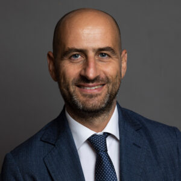

DYNAMES
DYNAMES
The American military intervention in Iran in 2026 had a declared objective: regime change. It did not achieve it. What it did achieve was something quite different and, from a strategic standpoint, arguably more dangerous: it handed Tehran the legitimacy and the determination to close the Strait of Hormuz, turning a rhetorical threat into a concrete instrument of global pressure.
Arturo Varvelli, Head of the Rome Office of the European Council on Foreign Relations and one of Italy’s leading experts on Middle Eastern geopolitics, does not mince his words. Iran had never been pushed into a corner like this in forty years; an actor with nothing left to lose does not calculate risks the same way. From this premise unfolds an analysis that spans the Gulf, North Africa, European paralysis, and China’s quiet advance.
Donald Trump built part of his political narrative on criticism of the 2015 JCPOA, from which the United States withdrew in 2018. If a new agreement with Tehran were to become reality today, what would it need to look like - compared to the previous one - to be considered a significant strategic result rather than simply a return to square one?
The starting point is that there is no going back to the status quo - and I believed this from the very first moment. The American and Israeli intervention was, in my view, rather poorly calculated, and instead of weakening Iran, it handed Tehran new strategic leverage.
To understand the qualitative shift, you need to compare this crisis with the military exchange of summer 2025. At that point, all three powers exercised restraint: everyone understood the risks of escalation. This time was different. The military action had the explicit aim of bringing down the Iranian government. It was declared openly. And that backed the regime into a corner.
The Iranian regime had not found itself in a situation like this in the past forty years: a genuine existential war. When you face an existential threat, you have nothing left to lose. And when you have nothing to lose, you can consider any measure at all - including closing the Strait of Hormuz. To use a video game metaphor: we unlocked a new capability for Iran. And that capability can be reactivated in any future crisis.
How realistic is it to expect a negotiated agreement in the short term?
Not at all. The deal reached a decade ago, the JCPOA, was negotiated over two or three years at least. Now we are talking about sixty days to replicate something of that complexity? What I expect is one extension after another: sixty days, then another sixty, then a hundred and twenty. Endless deferrals. We will end up in a kind of diplomatic limbo where Hormuz is open, half-open, let’s see how it goes. Someone will also need to demine it. In the meantime, the Iranian regime will emerge from this situation in far better economic shape, thanks to the easing of sanctions. Those funds will be used to consolidate internal control. Hardly a regime in decline.
We have no guarantee whatsoever of reaching a deal that improves on the JCPOA. If there is a deal, it will be worse than the previous one. Only Donald Trump will sell it as a success.
A central point of contention is the permitted level of uranium enrichment. What technical compromise could both sides realistically live with, without leaving Tehran close enough to a bomb to make breakout a near-term threat?
It is hard to say, because we are in a zone of total unknowns. Even members of the US Congress do not know: who will control the uranium, under what parameters enrichment can continue, whether the civilian programme is still on the table.
But there is a deeper problem: American credibility has collapsed. Signing a deal with Obama is one thing; signing one with Donald Trump - who first wants regime change, then wants an agreement, then announces thirty-seven times that a deal is imminent without anything materialising - is quite another. A decade ago there was a different framework of credibility: European powers, the EU, Federica Mogherini, a functioning multilateral system. How do you rebuild all that trust? That is precisely why I do not think we can return to the status quo: we are heading somewhere different, and almost certainly worse.
In the wake of Israeli strikes on Iran and the escalating regionalisation of the conflict, are we seeing the final collapse of America’s decade-long containment strategy in the Middle East?
The symmetrical response of an actor backed into a corner follows a precise logic. Iran could not strike the United States directly - at most their bases in the region. So it hit American strategic allies in the area and closed Hormuz to inflict damage indiscriminately. It was a proportional response to the existential threat it was facing.
What we are witnessing, in essence, is a failure of the American containment strategy in the region. That security architecture, which was supposed to protect Gulf states under the American umbrella, does not appear to be working.
Saudi Arabia has been attacked twice on its own soil. Two attacks, both under the Trump administration. If I were Mohammed bin Salman, I would be asking myself some serious questions (and they already are). There are essentially two very different paths in front of them. The first is independent strategic projection: looking to Pakistan’s nuclear umbrella, strengthening ties with Turkey, bringing in Egypt, building a kind of Arab NATO - or more accurately, a Muslim NATO, since it would include Gulf states and Turkey. It is an ambitious vision, but enormously complex: holding all these countries together is very difficult.
The second path is one of subordination to Israel - and it is the choice the UAE has already made. Their reasoning is straightforward: we live in a world where Iran can attack us at any moment, the United States is no longer a reliable guarantee, and we want to keep doing business. So we align with Israel. It is a realpolitik choice, but one that fundamentally reshapes the regional balance.
You have spent years researching Libya and the wider Mediterranean. What tangible consequences could the current Israel-Iran escalation have on North African stability and on the energy corridors that supply Europe?
The Hormuz crisis is also a demonstration of how dangerous it is to rely on a single corridor. We live in an “Age of black swans”: unpredictable events that become global problems precisely because the international system has lost the shock absorbers it once had. And every bottleneck gets weaponised.
The strategic response should be diversification: more sources, more corridors, more alternatives. In this sense I think IMEC - the corridor from India through the Middle East to Europe - is conceptually a sound idea, and not only for the infrastructure it would provide: if Europe can bring different nations together in a shared project, those nations will have an incentive to cooperate. It becomes political leverage, not merely a trade route.
On North Africa, the closure of Hormuz has paradoxically restored strategic relevance to Algeria and Libya, whose energy resources are once again highly appealing. But Libya remains so unstable that serious investment there is very hard to contemplate: geopolitical relevance does not automatically translate into operational stability.
In this complex geopolitical context, is Europe condemned to irrelevance, or is there a political course that could change things?
There are two distinct problems. The first is structural: every individual European country is, at best, a middle power. Germany, France, post-Brexit Britain, Italy - none of them can compete with the major international actors: the United States, China, India, Russia, Turkey. This would require a strong unity of purpose at the European level that is still very hard to build.
The second problem is subtler but perhaps more decisive: we only do reactive policy. Over the past fifteen years European countries have been overwhelmed by one crisis after another: the 2007-2008 financial crisis, migration, Covid, the post-Covid economy, Russia-Ukraine, Hormuz. In this relentless succession of emergencies they have given up on proactive foreign policy. We have condemned ourselves to being on the receiving end of international events rather than shaping them.
On top of that, the Trump administration, with its unpredictable moves, has made proactivity even harder: we are constantly forced to react.
These unpredictable moves have been justified by some commentators as a genuine American strategy to “control the world's straits”. Do you agree, or is it all improvisation?
I think there is a vision inside the Trump administration on this. It is a very transactional administration, and a logic of controlling straits, like Bering, Panama, Suez, makes sense in their mindset. But the distance between having that vision and actually executing it is enormous, as we saw with Hormuz.
The United States came out of this looking very bad. They demonstrated extreme weakness, not strength. Even with direct military action they failed to reopen Hormuz. That is the result of wanting to do things without having planned them, without understanding the consequences of one's actions: a genuine strategic failure.
And while Washington stumbles, I would watch China: quietly, with remarkable capabilities, it is taking advantage of this phase of American weakness. The United States is the threatened hegemon: for the first time, under Trump, they are willing to dismantle the international order they built over eighty years, because they no longer believe that order works in their favour. It is sometimes irrational behaviour, but understandable in its logic: an actor that feels it is losing can start playing in increasingly unpredictable ways.
About Arturo Varvelli

Arturo Varvelli is Head of the Rome Office and Senior Policy Fellow at the European Council on Foreign Relations (ECFR). His research covers geopolitics and international relations in the MENA region, EU-MENA relations, Italian foreign policy and transnational terrorism. His primary area of expertise is Libya. Previously, he co-headed the MENA Centre and led the Terrorism Programme at ISPI in Milan, where he also coordinated the Rome MED - Mediterranean Dialogues with the Italian Ministry of Foreign Affairs. He has taught History and Institutions of the Middle East at IULM University and holds a PhD in International History from the University of Milan. He has published with The Atlantic Council and the Brookings Institution, and his commentary has appeared in The New York Times, The Washington Post and The Economist.